(Physicist)
Albert Einstein
"Imagination is more important
than knowledge. Knowledge is
limited.Imagination encircles the world.”

 Home
Biography
Publications
Hobbies
Blogs
Gallery
Home
Biography
Publications
Hobbies
Blogs
Gallery
"Imagination is more important
than knowledge. Knowledge is
limited.Imagination encircles the world.”
 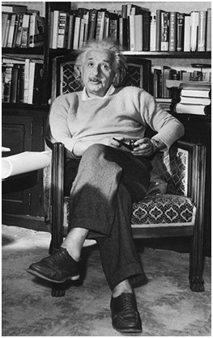
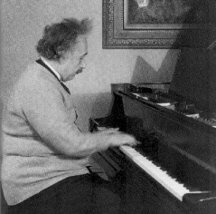
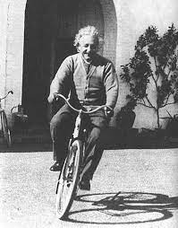
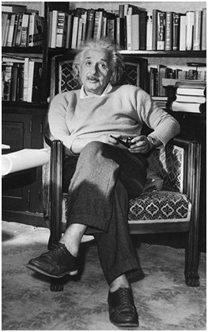
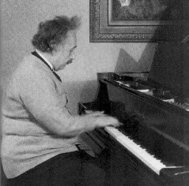
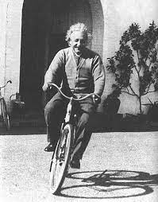

The most important human endeavor is the striving
for morality in our actions.
The world scarcely inhabits people with stature,
intelligence, creativity,and humanity like Einstein..
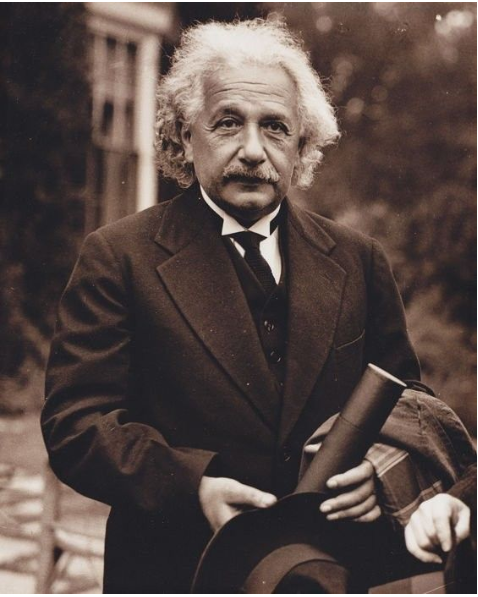
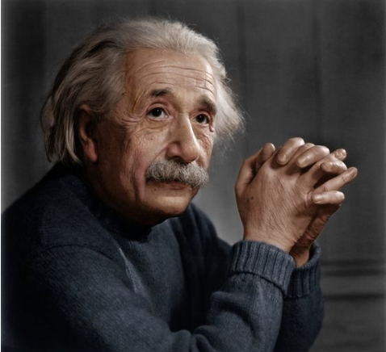
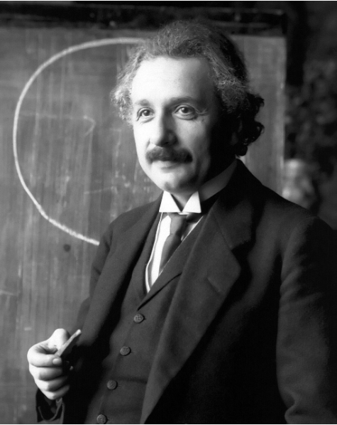
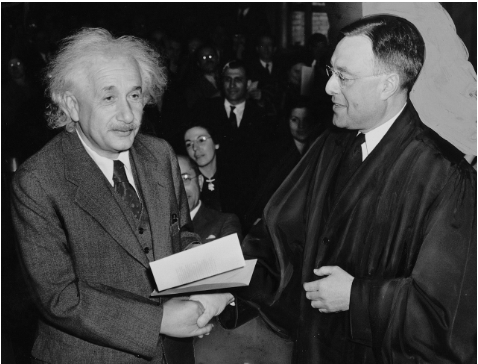
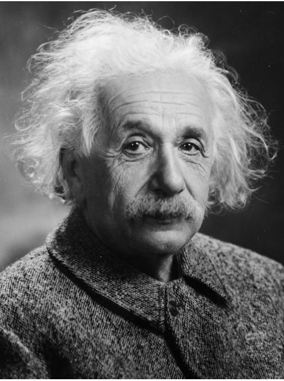
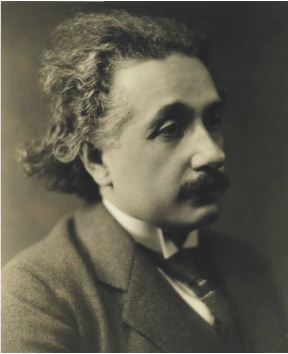